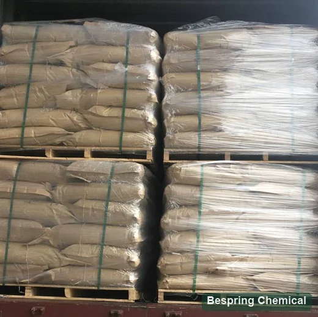

Mixing development
Track water absorption, development time, stability, resistance and overmix tolerance under controlled mixer energy.
Anionic food emulsifier · E472e / INS 472e
Food grade DATEM (E472e / INS 472e) is an emulsifier used in bakery formulations for dough strengthening. Bespring supplies DATEM for grade-specific sourcing. Specify the composition, fat/oil origin, physical form and intended bread process so the offered grade can be compared through controlled dough and baking trials.
Bespring commercial specification, form, packing and MOQ are not published—request current source documents.
Product identity and grade selection
DATEM stands for diacetyl tartaric acid esters of mono- and diglycerides. The 2009 JECFA monograph defines it as mixed glycerol esters of mono- and diacetyltartaric acid and fatty acids from edible fats and oils. It is a mixture, rather than a substance with one molecular formula, molecular weight or defined hydrate. Raw materials and reaction conditions affect the distribution of components.
JECFA lists CAS 308068-42-0 and 100085-39-0 for this identity. Neither the CAS nor E472e alone specifies an equivalent bakery grade. Confirm whether the offer is DATEM itself or a formulated preparation with carriers, anti-caking agents or other emulsifiers, and request its ingredient declaration and DATEM content. Food grade must be established independently of other grades.
Strengthen the dough interface
DATEM is commonly screened as an anionic dough-strengthening emulsifier. Its practical value is determined by interactions among flour proteins, starch, lipids, water, mixing energy and fermentation—not by a generic “emulsification” claim.
Track water absorption, development time, stability, resistance and overmix tolerance under controlled mixer energy.
Measure dough extensibility, resistance, fermentation expansion and collapse rather than assuming more strength is always better.
Compare oven spring, loaf volume, sidewall shape, break/shred and crumb-cell distribution.
Check crumb firmness, resilience, chew and dryness over the intended storage period. These are trial outcomes, not a fixed shelf-life benefit.
Compare with a controlled bake
Use one flour lot and record protein, damaged starch, absorption, ascorbic acid, enzymes, mono-/diglycerides and other improvers.
Include an untreated control, current benchmark and candidate levels suited to the grade and permitted use. Record whether trial levels refer to total preparation or DATEM content, and to flour mass or finished-food mass.
Test normal and extended mixing, proof time and temperature, line rest and process interruptions.
Record farinograph/mix data where available, dough handling, proof height, specific volume, crumb image, texture and shelf life.
Performance boundary: DATEM can support gas retention and dough tolerance in a suitable system, but this page makes no loaf-volume, yield or shelf-life guarantee.
Reference specifications and batch evidence
The 2009 JECFA values below are independent identity/purity references, not a Bespring TDS or batch COA.
On small screens, swipe the table to read the values and buyer requirements.
| Field | JECFA reference | Buyer control |
|---|---|---|
| Acid value (mg KOH/g) | 40–130 | Method and tighter application-grade target |
| Total acetic acid | 8–32% after hydrolysis | Method, batch value and sensory/odor check |
| Total tartaric acid | 10–40% after saponification | Method and grade consistency |
| Total / free glycerol | 11–28% / ≤2.0% | Total: after saponification; free: aqueous extraction. Confirm the method and batch result. |
| Sulfated ash | ≤0.5% | 800±25°C method and result |
| Lead | ≤2 mg/kg | Current destination/customer limit and reporting method |
| Fatty-acid source/profile | Identity test; edible fats/oils | Source species/oil, hydrogenation, iodine value and claim documents |
| Physical/application fields | Not fixed by INS identity | Form, particle distribution, dispersibility, thermal behavior and bake benchmark |
This table contains selected JECFA reference fields, not commercial guarantee values or a complete conformity assessment. Agree the specification and test methods for the offered grade. A batch COA reports that batch against the agreed specification; it does not replace the specification or an application trial.
Acid value expresses the potassium hydroxide required to neutralize acids in one gram of material, as described in JECFA analytical methods. It is not a bakery performance rating. Request the TDS, SDS, representative and batch COA, ingredient/source declarations and any required certificate with its scope. Confirm physical form, composition, pack size, MOQ, storage, shelf life and delivery terms in the actual offer.
The cited 2009 mixture definition, two CAS entries, identity, purity and test methods.
Review the 2009 monographUse this database to check the destination-relevant food category, limits and notes; confirm applicable national rules separately.
Review INS 472e provisionsFor US food use, 21 CFR 184.1101 defines the ingredient and specifies identity/purity, functions, food categories and good-manufacturing-practice conditions. An E/INS number is not permission for every food or market.
Select by mechanism and label
Anionic emulsifier commonly selected for dough strengthening and gas-cell stability.
Lactylates have different chemistry and performance. Compare strength, crumb, permitted use and label declaration.
Compare mono- and diglycerides (E471) and distilled monoglyceride grades by composition and the required dough or crumb response. They are not equal-dose DATEM substitutes.
Enzymes act catalytically and depend on substrate/process. Compare flour variability, tolerance, shelf life and label strategy.
For acid/base gas-release design rather than yeast-dough strengthening, review the bakery leavening phosphate guide.
Source-to-line approval
Confirm INS 472e, production definition, edible fat/oil origin and required declarations.
Align acid value, tartaric/acetic acid, glycerol, fatty-acid profile, ash, lead and methods.
Approve liquid/paste/solid or powder form, carrier if any, particle distribution and dispersion process.
Use matched flour and process to compare dough rheology, tolerance, volume, crumb and texture.
Validate dosing, premix uniformity, line stops, proof variation, shelf life and rework.
Approve COA, sampling, odor, form, packaging, storage and change notification.
Historical logistics reference

Historical logistics illustration; it does not establish the DATEM grade, bag weight or final packing arrangement. Agree packaging, liner, pallet configuration and freight requirements in the offer. Follow grade-specific storage instructions and confirm shelf life and handling after opening from the product documents.
Buyer questions
DATEM means diacetyl tartaric acid esters of mono- and diglycerides, a mixture of glycerol esters used as a food emulsifier. E472e and INS 472e identify the additive, but do not specify one composition, physical form or bakery grade.
No. Compare ester composition, fat/oil source, physical form and the full ingredient declaration. Evaluate candidates with the same flour, recipe, mixing, proofing and baking process.
No guaranteed relationship applies to every grade and dough. Use a controlled trial to assess volume alongside extensibility, machinability and crumb texture; choose trial levels within the applicable permitted use.
No. They are selected values from the cited 2009 monograph. Obtain the offered-grade specification, complete methods and a COA for the actual batch. Acid value is a composition-related analytical measure, not a direct performance guarantee.
The identity allows fatty acids from edible fats and oils; it does not establish a particular plant or animal source. Request an origin declaration and any required vegetarian, halal, kosher or allergen evidence for the offered grade and relevant production site.
Do not assume an equal-dose replacement. Their chemistry and application behavior differ. Review permitted use, composition and label requirements, then reformulate and validate in the actual food and process.
Provide the food standard, application, flour and process, benchmark and performance targets, origin restrictions, composition and form, quantity, packaging, destination and delivery terms. List required TDS, SDS, COA and declarations so availability and scope can be confirmed.
Reviewed 2026-10-04 · Technical references: FAO/WHO JECFA and US eCFR; Codex lookup link provided for use review.
Composition- and bake-led sourcing
Share the flour, improver system and controlled bake target so the source can be screened meaningfully.